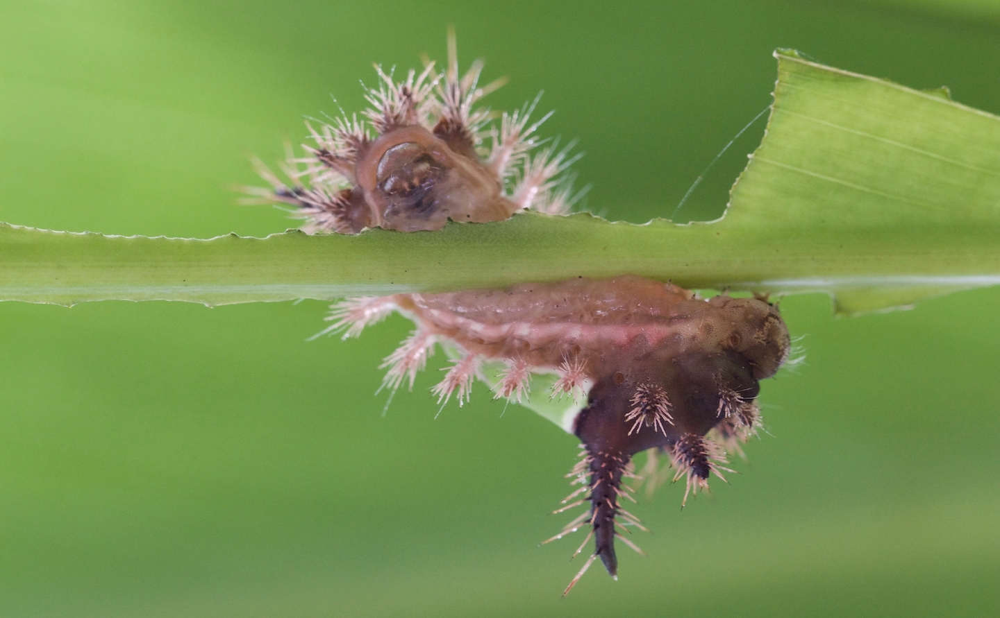

Collaborator directory

| Site PI | Institution | Additional Participants |
|---|---|---|
| Karen Abbott | Case Western Reserve Univ | |
| Luis Abdala-Roberts | Univ Autónoma de Yucatán | |
| Ramiro Aguilar | National University of Córdoba, Argentina | |
| Armando Aguirre Jaimes | INECOL | |
| Warwick Allen | Univ of Canterbury | |
| Janete Andrade | Univ Federal da Paraíba | Bráulio Almeida Santos |
| Diego Angulo | Univ Autónoma de Yucatán | |
| Diego Anjos | Federal University of Uberlândia, Brazil | Raquel Carvalho |
| Daniel Anstett | Univ British Columbia | Julia Anstett |
| Mohammed Armani | Xishuangbanna Tropical Botanical Garden, Chinese Academy of Sciences | |
| Robert Bagchi | Univ of Connecticut | |
| Sumanta Bagchi | Indian Institute of Science | Rohit Pawar, Manasi Sawant |
| Milton Barbosa | Federal Univ of Minas Gerais | Geraldo Wilson Fernandes; Renata Maia; Samuel Novais |
| Matt Barbour | Univ of Zurich | |
| Sarah Barrett | Threatened Flora, DBCA, Western Australia | |
| Kasey Barton | Univ of Hawaiʻi at Mānoa | |
| Carina Baskett | Georgia Tech | Nóra Mucsuga, Nisha Dwivedi, Damien Vanderhoeven, Juan Manuel Gorospe |
| Ethan Bass | Cornell Univ | |
| Kilian Blaise | Univ of Neuchâtel | |
| Kathryn Bloodworth | Univ of North Carolina at Greensboro | Morgan Frost, Sally Koerner |
| Karina Boege | Univ Nacional Autónoma de México | |
| Judie Bronstein | Univ of Arizona | |
| Emilio Bruna | Univ of Florida | |
| Hans Henrik Bruun | Univ Copenhagen | |
| Yvonne Buckley | Trinity College, Dublin | |
| Karin Burghardt | Univ of Maryland | Kelsey McGurrin |
| Carlos Bustos-Segura | Univ of Neuchâtel | |
| Ciro Cabal | Princeton Univ | |
| Ivalu Cacho | Univ Nacional Autónoma de México | |
| Eduardo Calixto | Univ of Florida | |
| Lucas Carbone | National University of Córdoba, Argentina | |
| Raquel Carvalho | Embrapa/Lancaster University | Diego Anjos |
| Andrea Casadesús Cabral | Univ Barcelona | |
| Bastien Castagneyrol | INRA, Univ of Bordeaux | Yasmine Kadiri |
| Ana Laura Chiapero | CONICET | |
| Mariana Chiuffo | INIBIOMA, CONICET-Universidad Nacional del Comahue | |
| Damla Cinoglu | Univ of Texas, Austin | |
| Elizeth Cinto Mejia | Michigan State Univ | |
| Marina Cock | INCITAP | |
| Rodrigo Cogni | Univ de São Paulo | |
| Tatiana Cornelissen | UFMG; UFSJ, Brasil | |
| Fernanda Costa | Universidade Federal de Ouro Preto, Brazil | Victor Diniz Pinto |
| Tyler Coverdale | Cornell Univ | Juanita Yim |
| David Crowder | Washington State Univ | |
| Pablo Cuevas Reyes | Universidad Michoacana de San Nicolás de Hidalgo | |
| Wesley Dáttilo | Red de Ecoetología, Instituto de Ecología AC, Xalapa, Veracuz, Mexico | Pedro Luna |
| Crowder David | Washington State Univ | |
| Julie Davis | Cornell Univ | |
| Kleber Del-Claro | Universidade Federal de Uberlandia | |
| Romina Dimarco | IFAB (INTA - CONICET) | |
| Rodolfo Dirzo | Stanford University | |
| Haley Dole | Michigan State Univ | |
| Nontembeko (Ntemsie) Dube | University of the Free State Entomology and Zoology department | |
| Virginia Duboscq | Centro Científico Tecnológico Conicet Comahue | |
| Lee Dyer | Univ of Nevada, Reno | |
| Will Edwards | James Cook Univ | |
| Ikponmwosa Egbon | Univ of Benin | Osatae EGBON, Eghosa J. OMORAGBON, Kelvin OGBIEDE, Orhue Osasumwen OMOIGUI |
| Johan Ehrlén | Stockholm Univ | |
| Michael Eisenring | Univ of Wisconsin | |
| Afure J. Ejomah | Nigerian Institute of Oil Palm Research (NIFOR) | |
| Bret Elderd | Louisiana State Univ | Jennifer Kluse, Blythe Elderd |
| Allan Ellis | Stellenbosch Univ | |
| María-José Endara | Univ Indoamérica | |
| Micky Eubanks | Texas A&M | |
| Suz Everingham | Univ New South Wales | |
| Rafael Farias | Universidade Federal do Acre | None |
| Tom Fayle | Czech Academy of Sciences; Univ Malaysia Sabah | |
| Akshatra Pracy Fernandes | Goa Univ | |
| Geraldo Wilson Fernandes | Federal University of Minas Gerais | |
| Marco Ferrante | Univ of the Azores | Lucas Lamelas-Lopez; Nora Haack |
| Grace Florjancic | Virginia Tech Univ | |
| Michael Foisy | Michigan State Univ | |
| Matt Forister | Univ of Nevada, Reno | |
| Dale Forrister | Univ of Utah | |
| Enric Frago | CIRAD | |
| Filipe França | Lancaster Univ (LEC) | |
| Benjamin Fuchs | Univ of Turku | |
| José García-Franco | INECOL, Xalapa | |
| Abigail Getman-Pickering | NA | |
| Zoe Getman-Pickering | Cornell Univ | |
| Ernesto Gianoli | Univ de La Serena | |
| David Giron | CNRS/Univ François-Rabelais de Tours | |
| Ben Gooden | CSIRO | |
| Martin Gossner | Swiss Federal Research Institute WSL | |
| Vinita Gowda | Indian Institute of Science Education and Research | |
| Keri Greig | Univ Texas, Austin | |
| Sofia Gripenberg | Univ of Reading | |
| Ronny Groenteman | Manaaki Whenua – Landcare Research | Quentin Paynter, Aoife Neill |
| Patrick Grof-Tisza | Univ of Eastern Finland | |
| Nora Haack | Univ Leipzig | Lisa Hahn, Isabelle Schumann, Justus Hennecke |
| Lisa Hahn | Univ of Leipzig | Nora Haack, Isabelle Schumann, Justus Hennecke |
| Phil Hahn | Univ of Florida | |
| Peter Hambäck | Stockholm Univ | |
| Marifatul Haq | NA | |
| Anjel Helms | Texas A&M Univ | |
| Justus Hennecke | Univ Leipzig | Nora Haack, Isabelle Schumann, Lisa Hahn |
| Sara Hermann | Penn State Univ | John Tooker |
| Liza Holeski | Northern Arizona Univ | |
| Sille Holm | University of Eastern Finland; University of Tartu | Anu Valtonen, Miro Mykrä, Ronja Kettunen, Anniina Lumia, Laura Oinas, Reetta Santaniemi, Emmi Sipura, Riina Sorsa |
| Matt Hutchinson | Princeton Univ | |
| Brian Inouye | Florida State Univ | |
| Eleanor Jackson | Univ of Reading | |
| Sierra Jaeger | Oklahoma State Univ | |
| Mary Jamieson | Oakland Univ | |
| Niklas Janz | Stockholm Univ | |
| Tiberius Jimbo | Papua New Guinea Forest Research Institute; LAE National Herbarium | |
| Jasmine Kadiri | INRA, Univ of Bordeaux | |
| Aino Kalske | Univ of Turku | Suvi Hakulinen (student) |
| Michael Kalwajtys | Michigan State Univ | |
| Rick Karban | Univ of California, Davis | |
| Rupesh Kariyat | University of Texas-Rio Grande Valley | |
| Tamar Keasar | Univ of Haifa | Nitsan Nachtom |
| Anne Kempel | Univ of Bern | |
| Monica Kersch-Becker | Univ of Alabama | |
| Andre Kessler | Cornell Univ | |
| Heather Kharouba | Univ of Ottawa | |
| Tania Kim | Kansas State Univ | |
| Duncan Kimuyu | Karatina Univ | Adam Sneath |
| Sally Koerner | Univ of North Carolina at Greensboro | |
| Kimberly Komatsu | Smithsonian Environmental Research Center | |
| Suzanne Koptur | Florida International University | |
| Shivani Krishna | Ashoka University | |
| Sushmita Krishnan | Bharathidasan University | |
| Ezekeil Kwembeya | Univ of Namibia | |
| Miika Laihonen | Univ of Turku | Anne Muola |
| Michael LaScaleia | Univ of Connecticut | |
| Inara Leal | Universidade Federal de Pernambuco | |
| Nicolas Lecomte | Université de Moncton | |
| Carlos Rodrigo Lehn | Instituto Federal Farroupilha - campus PANAMBI | |
| Natalia Lescano | INIBIOMA/CONICET | |
| Xiaofei Li | Jilin Argriculture Univ | |
| John Lill | The George Washington Univ | Martha Weiss |
| Wenwen Liu | Xiamen Univ | |
| Eric LoPresti | Michigan State Univ | |
| Allison Louthan | Kansas State University | |
| Victoria Luizzi | Univ of Arizona | |
| Pedro Luna | INECOL | |
| Shannon Lynch | Kansas State Univ | |
| Joshua Lynn | Univ of Bergen | |
| Nicholas Lyon | Herbivory Variability Network (Data Scientist 2021-) | |
| Laís Maia | Univ Canterbury | |
| Renata Maia | Federal University of Minas Gerais | Geraldo Wilson Fernandes; Milton Barbosa; Samuel Novais |
| Tosca Mannall | Univ of Bern | |
| John Maron | Univ of Montana | |
| Tara Massad | Gorongosa National Park, Mozambique | |
| Wendy McBride | Univ of Nevada, Reno; Coconino CC | |
| Andrew McCall | Denison Univ | |
| David McNutt | Florida State Univ | |
| Klaus Mehltreter | Univ Ulm | |
| Andrew Merwin | Baldwin Wallace Univ | |
| Zarluis Mijango-Ramos | Univ of Texas, Austin | |
| Charlotte Mills | Univ of Reading | |
| Angela Moles | Univ New South Wales | |
| Kailen Mooney | Univ of California, Irvine | |
| Chris Moore | Colby College | |
| Jose Carlos Morante-Filho | Univ Estadual de Santa Cruz - UESC | |
| Xoaquín Moreira | Biological Mission of Galicia (CSIC) | |
| Colin Morrison | Univ of Texas, Austin | Greivin Salazar |
| Moleseng Claude Moshobane | South African National Biodiversity Institute (SANBI) | |
| Aalia Motala | Univ of Kwazulu-Natal | Serban Proches |
| Natasha Mothapo | Stellenbosch Univ | |
| Anne Muola | Univ of Turku | Miika Laihonen |
| Daniel Munyao Mutyambai | Cornell Univ; South Eastern Kenya Univ | |
| Jessie Mutz | Florida State Univ | |
| Ryosuke Nakadai | Univ of Tokyo | |
| Kazuhide Nakajima | The University of Tokyo | |
| Felix Neff | Swiss Federal Research Institute WSL | |
| Tobin Northfield | Washington State Univ | |
| Samuel Novais | Federal University of Minas Gerais | Geraldo Wilson Fernandes; Milton Barbosa; Renata Maia |
| Vojtech Novotny | Czech Academy of Sciences; Binatang Research Center | |
| Paul Ode | Colorado State Univ | |
| Jane Itohan Otabor | Federal Univ of Wukari, Taraba State Nigeria | |
| Todd Palmer | Univ of Florida | |
| Vincent Pan | Mich State Univ | |
| Nicholas Pardikes | Czech Academy of Sciences | |
| Martin Pareja | Univ Estadual de Campinas | Giovanna Garcia Fagundes, Luiz Henrique Rezende |
| N. Parthasarathy | Pondicherry Univ | Jibin Joseph, T. Harini, Manish Kuntal Buragohain, H.R. Raksha, Rahul Gour (M.Sc. Students in Ecology & Environmental Sciences) |
| Rohit Pawar | Savitribai Phule Pune Univ | |
| Quentin Paynter | Manaaki Whenua – Landcare Research | Ronny Groenteman, Aoife Neill |
| Ian Pearse | US Geological Survey | |
| Rachel Penczykowski | Washington Univ in St. Louis | Quinn Fox |
| Adam Pepi | Univ of California, Davis | |
| Cássio Pereira | NA | |
| Shyam Phartyal | Nalanda University | Harsh Yadav, Rahul Dav, Bipul Kumar, Kouame Romeo, Pranav Vinod , Mohamed Azaam, Hem Prasad Rai, Md. Asif Hashmi, S. Vaishaly, Kushagra Phartyal, Anita Sharma, Vijay Ojha |
| Frida Piper | Universidad de Talca | Caroline Dallstream |
| Katja Poveda | Cornell Univ | Jessica Lorena Vaca |
| Beth Pringle | Univ of Nevada, Reno | |
| Serban Proches | University of Kwazulu-Natal | Aalia Motala |
| Javier Puy | Trinity College Dublin | |
| Tere Quijano | Universidad Autónoma de Yucatán | |
| Carolina Quintero | INIBIOMA (CONICET-Universidad Nacional del Comahue) | |
| Claudio Ramirez | Instituto de Ciencias Biológicas, Universidad de Talca | |
| Sergio Rasmann | Univ of Neuchâtel | |
| Lora Richards | Univ of Nevada, Reno | |
| Moria Robinson | Michigan State Univ | |
| Haldre Rogers | Iowa State Univ | |
| Clarissa Rosa | Instituto Nacional de Pesquisas da Amazônia | Filipe França |
| Christoph Rosche | Martin-Luther-University Halle | |
| Jay Rosenheim | Univ of California, Davis | Leah Rosenheim |
| María Rosa Rossetti | Univ Nacional de Córdoba | |
| Betsabé Ruiz-Guerra | INECOL | |
| Justin Runyon | Rocky Mountain Research Station, USFS | |
| Asaf Sadeh | Volcani Center, Israel | Hila Segre |
| Yuzu Sakata | Akita Prefectural Univ | |
| Diego Salazar | Florida International Univ | |
| Danielle Salcido | Univ of Nevada, Reno | |
| Cristian Salgado | Univ de La Serena | |
| Bráulio Santos | Federal Univ of Paraíba | Janete Ferreira Andrade |
| Yuval Sapir | Yehuda Naftali Botanic Garden, Tel-Aviv Univ | |
| Yamila Sasal | INIBIOMA (CONICET-Universidad Nacional del Comahue) | |
| Yasuhiro Sato | Ryukoku Univ | |
| Manasi Sawant | Savitribai Phule Pune Univ | |
| Hayley Schroder | Cornell Univ | |
| Meredith Schuman | Univ of Zurich | |
| Isabell Schumann | Univ Leipzig | Nora Haack, Lisa Hahn, Justus Hennecke |
| Michal Segoli | Ben-Gurion Univ of the Negev | Tamir Rozenberg |
| Hila Segre | Volcani Center, Israel | |
| Oren Shelef | Volcani Center Agricultural Research Organization (ARO) | Eyal Ben Simchon |
| Naoto Shinohara | to | |
| Kaori Shiojiri | Ryukoku Univ | |
| Mike Singer | Wesleyan Univ | |
| Rachit Singh | Friedrich Schiller Univ | |
| Palatty Allesh Sinu | Central Univ of Kerala | |
| David Smith | California State Univ, San Bernardino | Dezirea Cortez |
| Mar Sobral | Univ de Santiago de Compostela | María Losada |
| Hema Somanathan | Indian Institute of Science Education and Research | |
| James Speed | Norwegian University of Science and Technology | |
| V.B. Sreekumar | Kerala Forest Research Institute | |
| Gisela Stotz | Univ de La Serena | |
| Ayco Tack | Stockholm Univ | Laura van Dijk |
| John Terblanche | Stellenbosch Univ | |
| Jennifer Thaler | Cornell Univ | |
| Muvari Tjiurutue | Univ of Namibia | |
| John Tooker | Penn State Univ | Sara Hermann |
| Daniel Torrico-Bazoberry | Univ del Desarrollo | |
| Kévin Tougeron | Université Catholique de Louvain | |
| Amy Trowbridge | Univ of Wisconsin | |
| Nash Turley | Univ of Central Florida | |
| Daniel Turner | Michigan State Univ | |
| Akane Uesugi | RMIT Univ | |
| Nora Underwood | Florida State Univ | |
| Sybille Unsicker | Max Planck Institute for Chemical Ecology | |
| Shunsuke Utsumi | Hokkaido Univ | |
| Osariyekemwen Uyi | Univ Benin | Afure Joan Ejomah, Cynthia Udeogwu, Osatae Egbon |
| Jessica Lorena Vaca Uribe | Universidad Nacional de Colombia (UNAL) | |
| Kim Valenta | Univ of Florida | |
| Anu Valtonen | Univ Eastern Finland | Sille Holm (post-doc), Minttu Janatuinen, Veera Karhu, Pinja Pennanen, Amanda Laatikainen, Patrik Vento, Satu Göös, Hilja Kohonen (undergraduate students at University of Eastern Finland) |
| Laura van Dijk | Stockholm Univ | |
| Vigdis Vandvik | Univ of Bergen | |
| Noé Velásquez-Rosas | Univ Veracruzana | |
| Radhika Venkatesan | Tata Institute of Fundamental Research (TIFR) | |
| Jesus Villellas | Complutense Univ of Madrid | |
| Lauren Waller | Lincoln Univ | |
| Bo Wang | Xishuangbanna Tropical Botanical Garden, Chinese Academy of Sciences | |
| Marjorie Weber | Michigan State Univ | |
| Will Wetzel | Michigan State Univ | Annie Levardsen, Emily Mall (undergraduate students at Michigan State Univ), Alice Puchalsky (graduate student at Michigan State Univ), Mariah Meek (assistant professor at Michigan State Univ) |
| Susan Whitehead | Virginia Polytechnic Institute | Grace Florjancic, Jacob Turner |
| Jennifer Williams | Univ of British Columbia | Jenna Loesberg |
| Keaton Wilson | University of Arizona | |
| Zhishu Xiao | Institute of Zoology, Chinese Academy of Sciences | |
| Akira Yamawo | Hirosaki Univ | Haruna Ohsaki |
| Samantha Yim | NA | |
| Shafia Zahra | Czech Academy of Sciences | |
| Luke Zehr | Michigan State Univ | Haley Dole, Wissam Jawad, Emma Mushaka (undergraduate students at Michigan State Univ), Anne Benson (while undergraduate at Middlebury College, VT), Sydney Jackson (while undergraduate at Austin College, TX), Ellen Davis-Zehr, Dennis Zehr (parents), Christian Millan Hernández (while lab manager at Michigan State Univ), Cecilia Prada Cordero (PhD candidate at Univ of Illinois) |
| Yihui Zhang | Xiamen University | |
| Zhiwei Zhong | Northeast Normal Univ |
